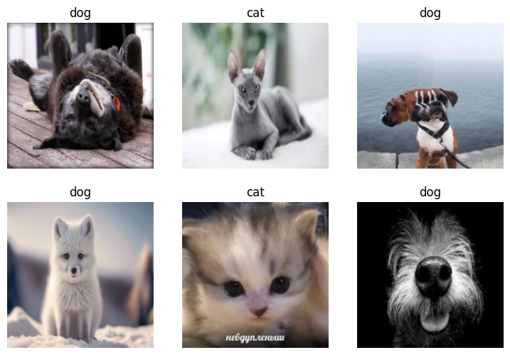

Kucing atau Anjing?#
terinspirasi dari: https://www.kaggle.com/code/jhoward/is-it-a-bird-creating-a-model-from-your-own-data
from icrawler.builtin import GoogleImageCrawler, BingImageCrawler
from fastcore.all import *
import logging
import time
from fastai.vision.all import *
membuat fungsi untuk mendownload gambar melalui Google
def search_images(keyword, image_dir, size="medium", max_images=200):
google_crawler = GoogleImageCrawler(storage={'root_dir': image_dir})
logging.disable(logging.CRITICAL)
flts = dict(size=size)
google_crawler.crawl(keyword=keyword, filters=flts, max_num=max_images)
return sorted(list(image_dir.glob("*")))
diuji coba, ternyata muncul gambar kucing.
pth_cat = Path("cat")
cat_locs = search_images("cat", pth_cat, max_images=1); cat_locs
[Path('cat/000001.jpg')]
im = Image.open(cat_locs[0])
im.to_thumb(256, 256)
lakukan hal yang sama tetapi untuk anjing
pth_dog = Path("dog")
dog_locs = search_images("dog", pth_dog, max_images=1)
im = Image.open(dog_locs[0])
im.to_thumb(256, 256)
oke, selanjutnya membuat folder untuk mengumpulkan gambar dan anjing. Gambar-gambar ini akan digunakan untuk training dan validasi
def search_images_parallel(keyword, image_dir, size="medium", max_images=200):
google_crawler = BingImageCrawler(
feeder_threads=1,
parser_threads=2,
downloader_threads=4,
storage={'root_dir': image_dir})
logging.disable(logging.CRITICAL)
flts = dict(size=size, type="photo")
google_crawler.crawl(keyword=keyword, filters=flts, max_num=max_images)
return sorted(list(image_dir.glob("*")))
searches = 'cat','dog'
path = Path('cat_or_not')
for o in searches:
dest = (path/o)
search_images_parallel(f"{o} photos", dest)
time.sleep(5)
resize_images(dest, max_size=400, dest=dest)
kita gunakan fastai untuk cek data, training, dan prediksi
dls = DataBlock(
blocks=(ImageBlock, CategoryBlock),
get_items=get_image_files,
splitter=RandomSplitter(valid_pct=0.2, seed=42),
get_y=parent_label,
item_tfms=[Resize(192, method='squish')]
).dataloaders(path, bs=32)
dls.show_batch(max_n=6)

learn = vision_learner(dls, resnet18, metrics=error_rate)
learn.fine_tune(3)
Downloading: "https://download.pytorch.org/models/resnet18-f37072fd.pth" to /Users/yudhastyawan/.cache/torch/hub/checkpoints/resnet18-f37072fd.pth
100%|██████████| 44.7M/44.7M [00:38<00:00, 1.22MB/s]
| epoch | train_loss | valid_loss | error_rate | time |
|---|---|---|---|---|
| 0 | 1.077830 | 0.469250 | 0.160000 | 00:17 |
| epoch | train_loss | valid_loss | error_rate | time |
|---|---|---|---|---|
| 0 | 0.358905 | 0.189952 | 0.060000 | 00:06 |
| 1 | 0.251838 | 0.248030 | 0.100000 | 00:04 |
| 2 | 0.213601 | 0.298915 | 0.120000 | 00:04 |
is_cat,_,probs = learn.predict(cat_locs[0])
print(f"This is a: {is_cat}.")
print(f"Probability it's a cat: {probs[0]:.4f}")
This is a: cat.
Probability it's a cat: 0.9998
is_cat,_,probs = learn.predict(dog_locs[0])
print(f"This is a: {is_cat}.")
print(f"Probability it's a cat: {probs[0]:.4f}")
This is a: dog.
Probability it's a cat: 0.0000
berhasil mendeteksi kucing dan anjing!